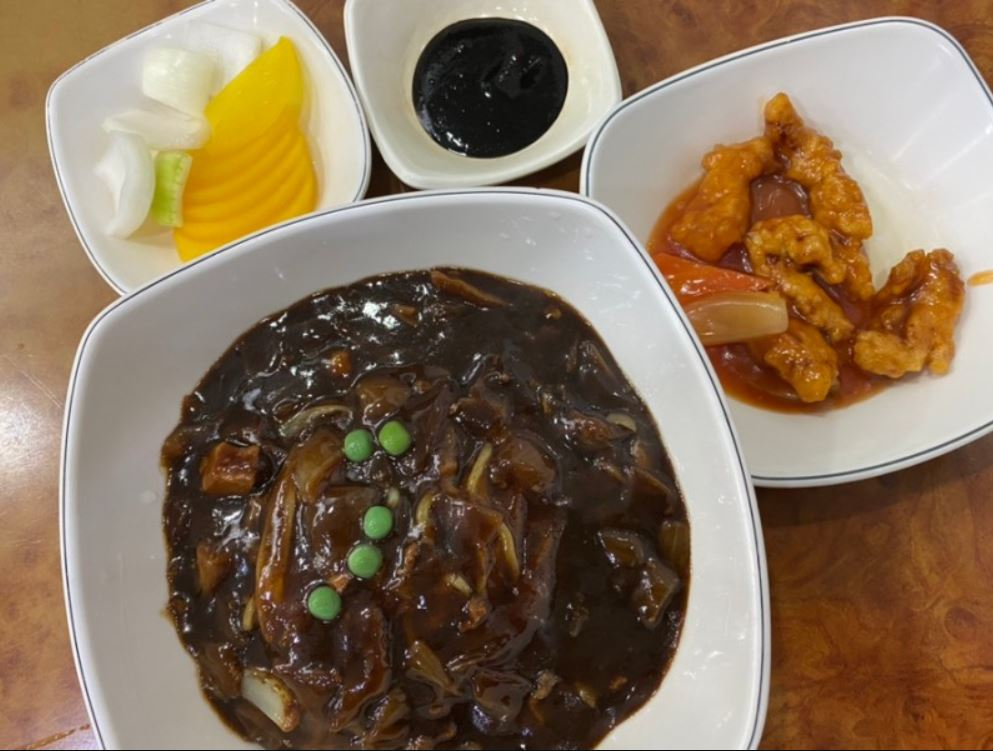
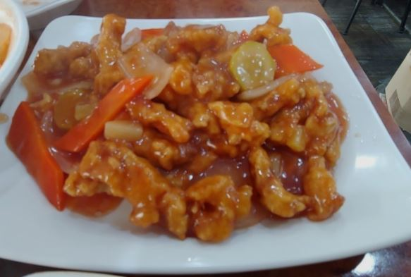

<DOCTYPE html>
    <html>
        <head>
            <script src="https://kit.fontawesome.com/f4dacc2b8e.js" crossorigin="anonymous"></script>
            <title>탑 짜장</title>
                <link rel="stylesheet" href="../../css/shop.css">
                <meta name="viewport" content="width=90%, height=90%, user-scalable=yes">

        </head>
        <body>
            <div class ="go-home">
                <a href="https://phw-plain.github.io">
                    
                </a>
            </div>
            <div class="left-bar">
                <div class="wrapper">
                    <div class="item">
                      <div class="polaroid">
                        <div class="caption"> 짜장면과 서비스로 나온 탕수육</div>
                      </div>
                    </div>
                  
                    <div class="item">
                      <div class="polaroid">
                        <div class="caption"> 이쁘게 담긴 탕수육</div>
                      </div>
                    </div>
                </div>
            </div>
            <div class="main-board">
                <div class="top">
                    <p class="top_main">탑 짜장</p>
                    <p class="top_serve">TOP of TOP</p>
                </div>
                <div class="middleandbottom" >
                    <span style="float: left;">
                        <span style="float: top;">
                            <div class="middle">
                                <ul style="list-style:none; padding-top: 110px; padding-left: 120px; margin-top: -50px;">
                                    <li><i class="fas fa-clock"></i> 매일 11:00 - 21:00</li>
                                    <li><i class="fas fa-shoe-prints fa-rotate-270"></i> 11분</li>
                                    <li><i class="fas fa-phone-alt"></i> 02-877-5049</li>
                                    <li><i class="fas fa-calendar-minus"></i> 휴무일 없음</li>
                                </ul>
                            </div>
                        </span>
                        <span style="float: bottom;">
                            <div class="map">
                                <iframe src="https://www.google.com/maps/embed?pb=!1m18!1m12!1m3!1d3166.6547013821923!2d126.93468591504356!3d37.46887393747339!2m3!1f0!2f0!3f0!3m2!1i1024!2i768!4f13.1!3m3!1m2!1s0x357c9ff6f927ae93%3A0x739afe2d1b9464d7!2z7YOR7Kec7J6l!5e0!3m2!1sko!2skr!4v1613737207379!5m2!1sko!2skr"
                                width="250" height="250" frameborder="0"  allowfullscreen="" aria-hidden="false" tabindex="0" 
                                style="border:0; padding-top: 210px;"></iframe>
                            </div>
                        </span>
                    </span>
                    <span style="float: right; margin-left: -180px; margin-top: -100px;">
                        <div class="bottom">
                            <div class="menu">
                                <i class="fas fa-utensils"></i> 가게메뉴
                            </div>
                            <div class="menu_list">
                                <span style="float: left;">
                                    <ul style="list-style:none; padding: 0;">
                                        <li><strong>면류</strong></li>
                                        <li>짜장면</li>
                                        <li>쟁반짜장</li>
                                        <li>짬뽕</li>
                                        <li><br></li>
                                        <li><strong>밥류</strong></li>
                                        <li>짜장밥</li>
                                        <li>짬뽕밥</li>
                                        <li>쟁반짜장밥</li>
                                        <li><br></li>
                                        <li><strong>요리</strong></li>
                                        <li>탕수육(소)</li>
                                        <li>탕수육(중)</li>
                                        <li>탕수육(대)</li>
                                        <li><br></li>
                                    </ul>
                                </span>
                                <span style="float: left; margin-left: 60px;">
                                    <ul style="list-style:none; padding: 0;">
                                        <li><br></li>
                                        <li>4.5<br></li>
                                        <li>6.0<br></li>
                                        <li>5.0<br></li>
                                        <li><br><br></li>
                                        <li>6.0<br></li>
                                        <li>6.0<br></li>
                                        <li>6.5<br></li>
                                        <li><br><br></li>
                                        <li>12.0<br></li>
                                        <li>17.0<br></li>
                                        <li>22.0<br></li>
                                        <li><br><br><br></li>
                                        <li style="margin-left: -100px; color: rgb(184, 28, 28);">가게 사정에 따라 <br>가격이 다를 수 있습니다.</li>
                                    </ul>
                                </span>
                            </div>
                        </div>
                    </span>
                </div>
            </div>
        </body>
    </html>